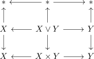
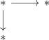
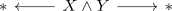

join of pointed anima as suspension of the smash product
Proposition
Let $X,Y$ be pointed anima, then there exists a canonical equivalence
\begin{align*}
X \star Y \simeq \Sigma(X \wedge Y)
\end{align*}
Proof
consider

where $X \vee Y \rightarrow X, Y$ is given by projecting the other part of the wedge to the basepoint.
then this diagram is given as product of

Then we may compute the colimit by computing the colimit of the rows and then the colimit of the columns or the other way around (cf. colimit of a product diagram )
Here we get
\begin{displaymath}
\begin{tikzcd}
\mbox{} * \\
\mobx{} * \uar \dar \\
X \star Y
\end{tikzcd}
\end{displaymath}resp. $X \star Y$ or

resp. $\Sigma(X \wedge Y)$